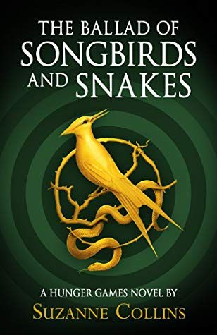
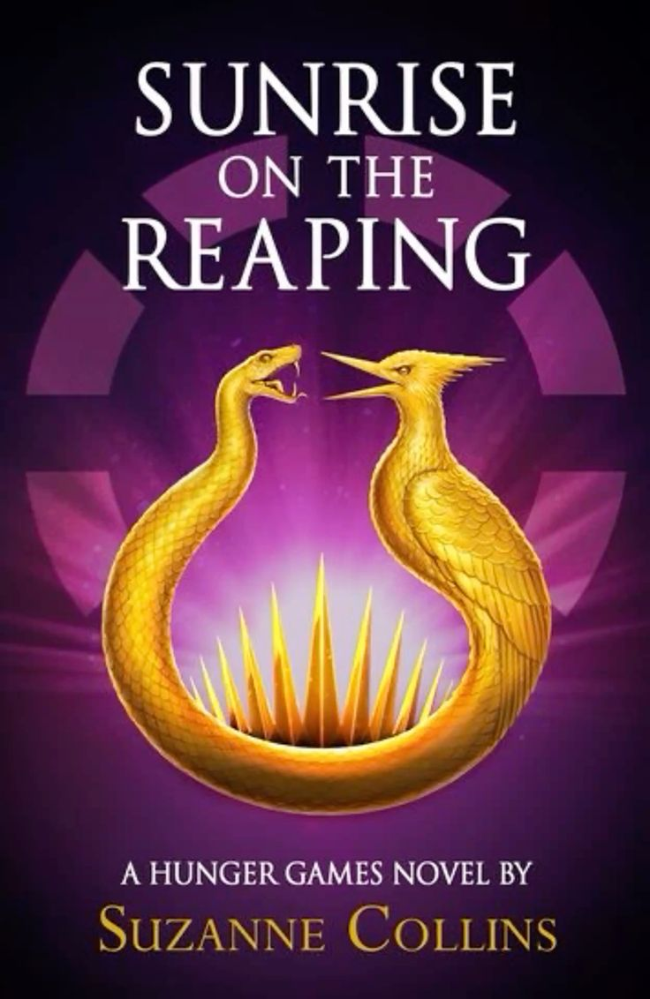
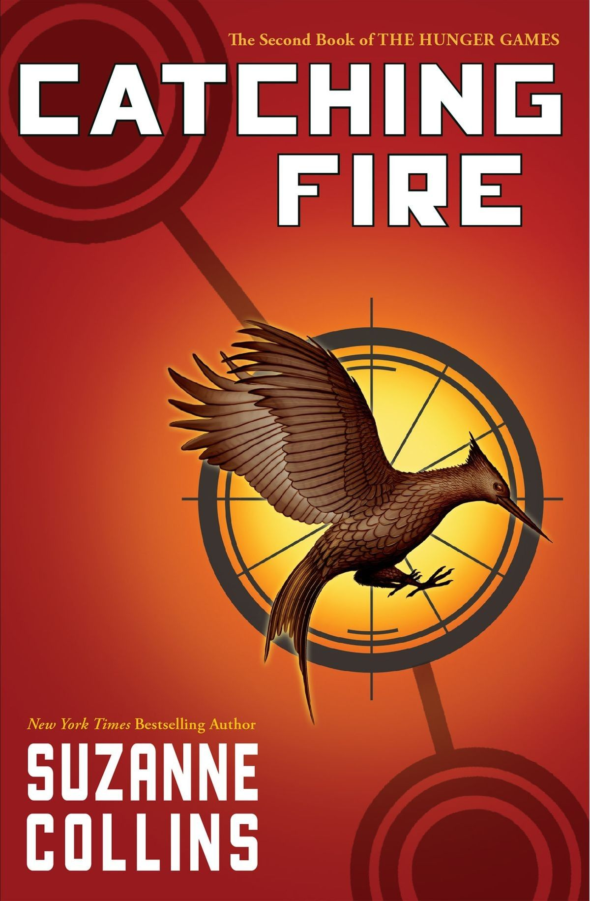
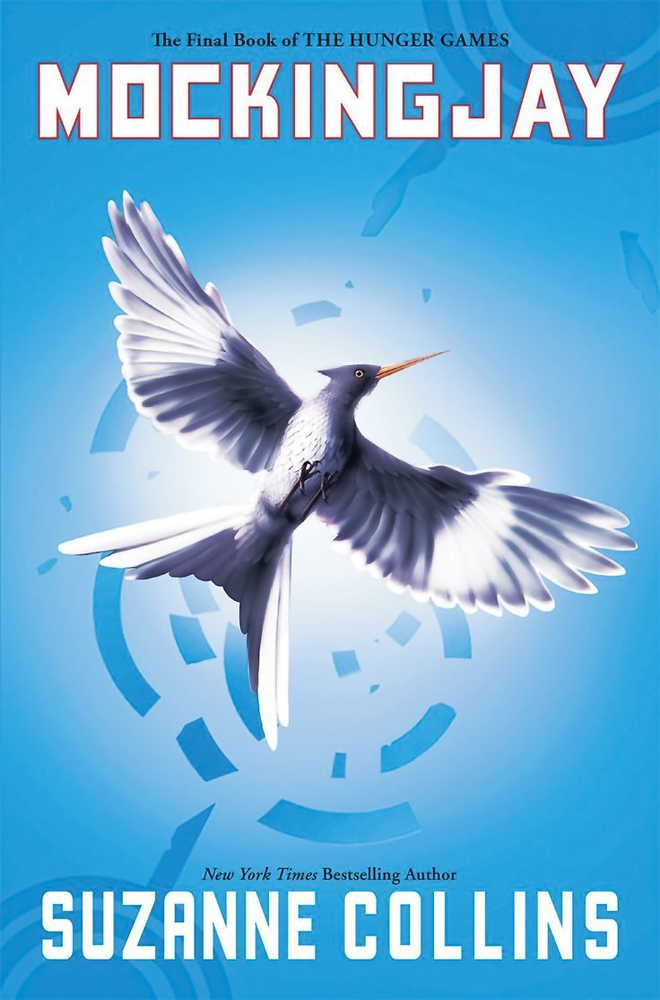
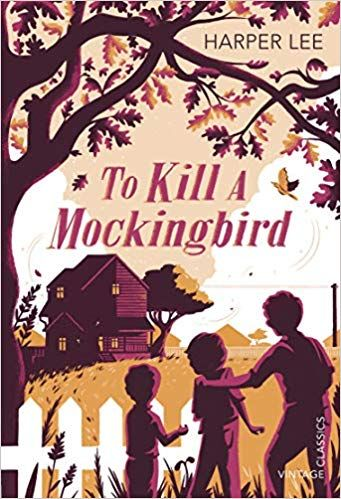

Read Books
Book #1.
Ballad of Songbirds and Snakes, Suzanne Collins 2020
Pages: 583
language: Spanish
Starting Date: 05/06/2025
Finished Date: 08/06/2025
Paperbook

★★★★★
Best Character: Lucy Gray Baird
Worst Character: Dra. Gaul
Quality of Writing: 10/10
Plot Development: 9/10
Ease of Reading: 9/10
Love Stoy: 7/10
Ending: 10/10
Would Recomend?: Yes
Book #2.
Sunrise on the Reaping, Suzanne Collins 2025
Pages: 382
language: Spanish
Starting Date: 13/06/2025
Finished Date: 23/06/2025
Paperbook

★★★★★
Best Character: Haymitch Abernathy, Mayslee Donner
Worst Character: Pdte. Snow, Silka
Quality of Writing: 10/10
Plot Development: 10/10
Ease of Reading: 8/10
Love Stoy: 5/10
Ending: 😭/10
Would Recomend?: Yes
Book #3.
The Hunger Games, Suzanne Collins 2008
Pages: 384
language: Spanish
Starting Date: 19/07/2025
Finished Date: 24/07/2025
Paperbook

★★★★☆
Best Character: Katniss Everdeen, Peeta Mellark, Rue
Worst Character: Gale 🤢, Cato
Quality of Writing: 10/10
Plot Development: 10/10
Ease of Reading: 9/10
Love Stoy: 7/10
Ending: 9/10
Would Recomend?: Yes
Book #4.
The Hunger Games; Catching Fire, Suzanne Collins 2009
Pages: 391
language: Spanish
Starting Date: 25/07/2025
Finished Date: 8/08/2025
Paperbook

★★★★★
Best Character: Katniss Everdeen, Peeta Mellark, Finnick O'Dair
Worst Character: Pdte. Snow, Gale 🤢
Quality of Writing: 10/10
Plot Development: 7/10
Ease of Reading: 9/10
Love Stoy: 11/10
Ending: 7/10
Would Recomend?: Yes
Book #5.
The Hunger Games; Mockingjay, Suzanne Collins 2010
Pages: 400
language: Spanish
Starting Date: 10/08/2025
Finished Date: 19/08/2025
Paperbook

★★★★★
Best Character: Katniss Everdeen, Finnick O'Dair, Peeta Mellark
Worst Character: Pdte. Snow, Gale
Quality of Writing: 10/10
Plot Development: 10/10
Ease of Reading: 8/10
Love Stoy: 8/10
Ending: 10/10
Would Recomend?: Yes
Book #6
To Kill a Mockingbird, Harper Lee 1960
Pages: 348
language: Spanish
Starting Date: 22/08/2025
Finished Date: 15/09/2025
Paperbook

★★★★★
Best Character: Scout Finch, Atticus Finch, Calpurnia
Worst Character: Bob Ewell
Quality of Writing: 10/10
Plot Development: 100/10
Ease of Reading: 6/10
Love Stoy: 2/10
Ending: 8/10
Would Recomend?: Yes
Stay Tuned For More Updates